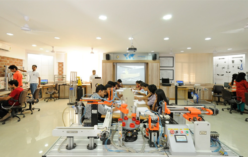
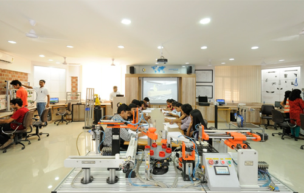

AJAY KUMAR GARG ENGINEERING COLLEGE
(Affiliated to Dr. APJ Abdul Kalam Technical University, Lucknow, UP, College Code - 027)Ajay Kumar Garg Engineering College (AKGEC), Ghaziabad is affiliated to Dr. A.P.J. Abdul Kalam Technical University, Lucknow, and is approved by the All India Council for Technical Education. The college was established in 1998. The college strives for excellence and has been consistently maintaining excellent academic results and placements.
The college has the distinction of being the first and only college in UP to receive the Academic Excellence Award for the Best Engineering College in UPTU (now AKTU) from H.E. the Governor of UP for two successive years. It is a matter of pride for the College to maintain a superlative overall academic performance over the years with a large number of students appearing in the University Merit List every year. The College has the honor of being awarded the Chancellor’s Award for highest marks in all B.Tech courses for five consecutive years in 2015-16, 2016-17, 2017-18, 2018-19 and 2019-20 since its inception in 2016. Spread over 40 acre campus, AKGEC has excellent infrastructure with well-planned complexes for each department having spacious laboratories, class rooms equipped with state-of-the-art teaching aids, department libraries and faculty cabins.
Departmental laboratories have the latest equipment and relevant licensed software. The college has state-of-the-art computing facilities with over 1400 computers networked through broadband for Internet access. The college has a fully automated central library with over 1,00,000 books, national/international journals including e-journals and multimedia resources.
The College has also set up the first Centre of Competence in Automation Technologies in North India in collaboration with BOSCH Rexroth AG, Germany. The centre aims to train young engineering graduates of all disciplines to meet industry expectations and foster research in the multidisciplinary field of automation technologies. This centre has six laboratories equipped with state-of-the-art equipment to teach and train students and professionals in Industrial Hydraulics, Pneumatics, Sensorics, Drives & Control, CNC, PLCs and Mechatronics at par with international standards.
 
